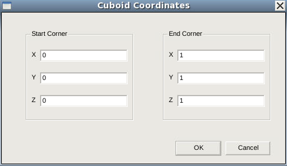

main menu
| module menu
| << previous section
| next section >>
main menu
| module menu
| << previous section
| next section >>
Sentaurus Structure Editor
1. Getting Started
1.1 Overview
1.2 Starting Sentaurus Structure Editor
1.3 User Interface
1.4 Input and Output File Types
1.5 Creating a Simple Structure
Objectives
- To identify the features of the user interface.
- To identify the file types that Sentaurus Structure Editor uses.
- To generate a simple device structure.
1.1 Overview
Sentaurus Structure Editor is a structure editor for 2D and 3D device structures. Its operational modes are 2D structure editing and 3D structure editing.
The process emulation mode of Sentaurus Structure Editor has been superseded by the 3D process simulation capabilities of Sentaurus Process. Using the process emulation mode of Sentaurus Structure Editor is discouraged. See the Sentaurus Process module, Section 11. Special Focus: Three-Dimensional Examples.
From the user interface, 2D and 3D device models are created geometrically, using 2D or 3D primitives such as rectangles, polygons, cuboids, cylinders, and spheres. Rounded edges are generated by filleting, 3D edge blending, and chamfering. Complex shapes are generated by intersecting primitive elements.
The user interface of Sentaurus Structure Editor features a command-line window, in which Sentaurus Structure Editor prints script commands corresponding to the user interface operations.
1.2 Starting Sentaurus Structure Editor
To start Sentaurus Structure Editor on the command line, type:
> sde
1.3 User Interface
In Sentaurus Structure Editor, structures can be generated or edited interactively using the user interface. The main window is organized into different areas. The menu bar, toolbars, and lists are in the upper part of the main window; the view window is in the center; and the command-line window is in the lower part of the main window.
{kind=link}
Figure 1. User interface of Sentaurus Structure Editor. (Click image for full-size view.)
1.3.1 Menu Bar
The menu bar consists of the following menus:
| Menu | Description |
|---|---|
| File | Load, save, and print functions |
| Edit | Change existing geometric objects |
| View | Visualization preferences and auxiliary views |
| Draw | Drawing and basic object creation, preferences |
| Mesh | Define a meshing strategy, call the meshing engine, visualize the generated mesh and data fields |
| Device | Define doping profiles |
| Contacts | Define and edit contacts and contact sets |
| Help | Version information |
1.3.2 Toolbars
Each toolbar contains a set of predefined shortcuts and buttons, which can be selectively added to or removed from the toolbars.
1.3.3 Lists
The element lists are used to select the objects to be operated on:
- The Material list is used to select the material to be assigned to new objects.
- The Work Plane list is used to select the work plane for 3D editing.
- The Contact list is used to select the contact name for the next set of contact region, or face, or edge operations. A contact must be defined before it can be listed.
- The Selection Level list is used to select the type of object accessible for editing (see Selection Level in Section 1.3.4 View Window).
1.3.4 View Window
The view window displays the current device. The result of all interactive operations is reflected immediately in the view window. Right-click in the view window to display the shortcut menu:
| Command | Description |
|---|---|
| Selection Level | Controls which type of object can be selected by clicking (Select mode). Options are Auto Select, Body, Face, Edge, Vertex, and Ref/Eval Window. |
| Toggle Visibility | Activates or deactivates a light source for shading 3D objects. |
| Contacts | If the selection level is set to Edge or Face, contacts are assigned to the selected objects. It is also used for the creation of new contact sets. |
| Delete | In many contexts, the object can be deleted by selecting this command. |
| Properties | Displays a window with information about the selected object. |
| Hide | If the selection level is set to Body or Ref/Eval Window, the selected entities are hidden. |
| Show All | All the previously hidden bodies and Ref/Eval windows are redisplayed. |
1.3.5 Command-Line Window
The command-line window displays the Scheme script commands corresponding to most user interface operations. Scheme commands can be entered directly at the prompt. This feature is useful in conjunction with copying script commands from and to a text editor, when creating and testing Scheme scripts.
1.4 Input and Output File Types
In Sentaurus Structure Editor, you can initialize a new model from the beginning or load a previous model to edit, and the result can be saved. The main input and output files supported by Sentaurus Structure Editor are:
- Scheme script file (.scm)
This is a user-defined script file that contains Scheme script commands describing the steps to be executed by Sentaurus Structure Editor when creating a device structure. This file can be edited. - Journal file (.jrl)
This file contains journaling commands in addition to Scheme script commands. Journaling commands control the execution of a script file. For example, the command:
(journal:step #t)
instructs Sentaurus Structure Editor to stop the continuous execution of a script and to step through the remaining script line by line. - ACIS SAT file (.sat)
This file contains the model geometry in native ACIS format and cannot be edited directly. - TDR boundary file (_bnd.tdr)
This is a boundary representation file written in TDR file format. It can be loaded directly into Sentaurus Structure Editor and other Synopsys TCAD tools, for example, Sentaurus Mesh. - Doping and refinement file (.cmd)
This is an ASCII format file containing doping and mesh refinement information that, in conjunction with the corresponding boundary file, uniquely defines the geometry of a model.
When File > Save Model or File > Save Model As is chosen, Sentaurus Structure Editor saves (1) the model geometry in an ACIS format file (.sat), (2) the Ref/Eval windows and parameters in a Scheme file (.scm), (3) the refinement- and doping-related information in a command file (.cmd), and (4) the structure in a TDR boundary file (_bnd.tdr).
The TDR boundary file is obtained using the command:
(sdeio:save-tdr-bnd (get-body-list) "name_of_file_bnd.tdr")
To open a TDR file, in a terminal window, launch the TDR file viewer with the command:
svisual "name_of_file.tdr"
1.5 Creating a Simple Structure
Sentaurus Structure Editor supports two distinct ways to create or edit a device structure:
- The user interface–based method relies on menu and mouse operations.
- The script-based method executes an input file containing user-defined Scheme script commands.
In addition, Sentaurus Structure Editor has another extremely flexible way to generate a device structure. This method accepts a hybrid of both user interface–based and script-based inputs and is possible using the command-line window. Since each user interface–based operation displays its corresponding Scheme command in the command-line window, all previously executed commands, either user interface–based or script-based, can be recalled, edited, and reexecuted.
1.5.1 Example
To create a structure consisting of one silicon and one oxide cuboid:
- Reinitialize Sentaurus Structure Editor by choosing File
> New.
This step is always recommended before creating a new model. - From the Material list, select Silicon.
- Click the Isometric View
(
 )
button to change to the 3D isometric view.
)
button to change to the 3D isometric view. - Choose Draw > Exact Coordinates to switch on the Exact Coordinates mode.
- Choose Draw > 3D Create Tools > Create Cuboid.
- Draw the shape by dragging the pointer in the view window.
When the mouse button is released, the Cuboid Coordinates dialog box opens showing the coordinates of the drawn shape.

- Enter (0 0 0) and (1 1 1) for the start and end corners of the cube.
- Click OK to create the cuboid.
The last Scheme script command appears in the command-line window:
(sdegeo:create-cuboid (position 0 0 0) (position 1 1 1) "Silicon" "region_1")
To access the command-line window, click in the area. All previous commands printed in this window can be edited and reused. To illustrate this, edit the last command so that it becomes:
(sdegeo:create-cuboid (position 0 1 0) (position 1 2 1) "SiO2" "region_2")
Press the Enter key. Another cuboid made of the material SiO2 is created (see Figure 2).
{kind=link}
Figure 2. Cuboid displayed in the view window. (Click image for full-size view.)
1.5.2 Hints for Experienced Users
The process of defining a complex device structure involves experimentation, which can lead to untidy code. Sentaurus Structure Editor supports a method to clean up the script:
- After each user interface–based operation, copy the generated Scheme script commands from the command-line window to a text editor.
- Use copy operations in the text editor to duplicate sections of the script if a similar operation block is required.
- Edit the script if required, and copy the script to the command-line window.
- If the script becomes untidy to work with, reinitialize Sentaurus Structure Editor (choose File > New) and copy the script from the text editor as needed.
main menu | module menu | << previous section | next section >>
Copyright © 2022 Synopsys, Inc. All rights reserved.